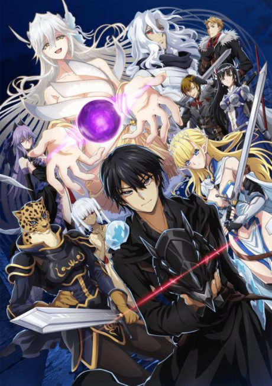
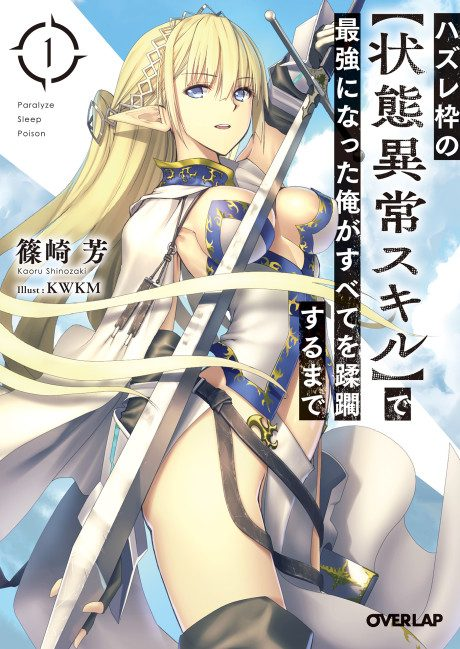
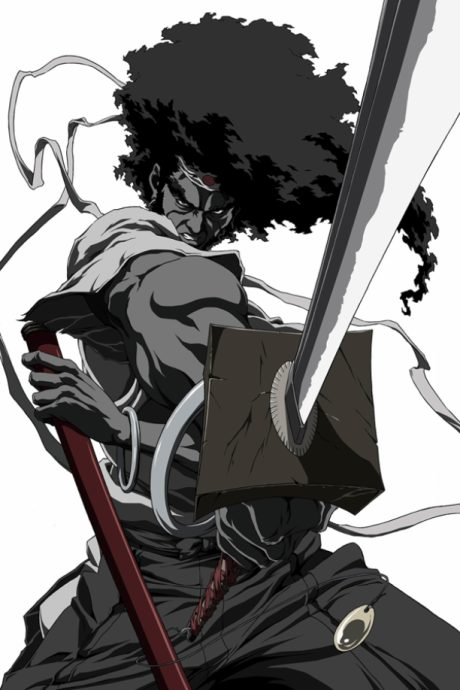

Failure Frame: I Became the Strongest and Annihilated Everything with Low-Level Spells
ハズレ枠の【状態異常スキル】で最強になった俺がすべてを蹂躙するまで
Touka's class is summoned to another world, where he alone gets a weak rank and is thrown into deadly ruins. His curse-type skills turn out to be terrifying.
After the anime, read the light novel from Volume 5.
6.4AniList score
—Animeter, no votes yet
12episodes
Rate it or report where you stopped
Anime finished. Where does the story go next?
Start at Volume5
The anime adapts through the end of volume 4, so start at volume 5 chapter 1.
14ongoing
Season 1Start reading here
More like Failure Frame: I Became the Strongest and Annihilated Everything with Low-Level Spells
 Manga Vol. 37.4
Manga Vol. 37.4
 Manga Vol. 27.2
Manga Vol. 27.2
 Manga Vol. 157.7
Manga Vol. 157.7
 Manga Vol. 157.6
Manga Vol. 157.6
 Novel ahead8.1
Novel ahead8.1
 Original7.6
Original7.6
 Done8.5
Done8.5
 Manga Vol. 58.1
Manga Vol. 58.1
 Original8.5
Original8.5
 Done9.0
Done9.0

Unclear7.1 Manga Vol. 117.8
Manga Vol. 117.8